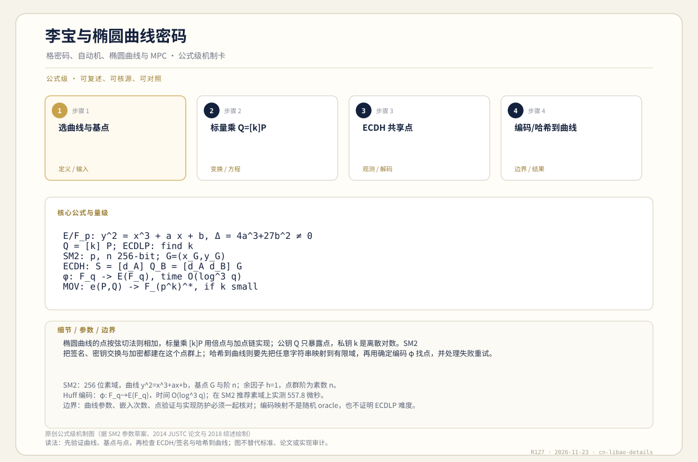

原理与机制
中国密码史：李宝与椭圆曲线密码（Li Bao and Elliptic Curve Cryptography）。### 点群与离散对数
椭圆曲线 (E/\mathbb{F}_p: y^2=x^3+ax+b) 需要判别式 (\Delta=4a^3+27b^2\ne0)。点按弦切法则构成群，公钥 (Q=[k]P)，ECDLP 就是从 (P,Q) 求 (k)。SM2 使用 256 位素域、基点 (G) 与阶 (n)；ECDH 的共享点是 (S=[d_A]Q_B=[d_A d_B]G)。### 从字符串到点
哈希到曲线不是“把哈希值当 x 坐标”那么简单：先把字符串映射到 (\mathbb{F}_q)，再用确定编码 (\varphi:\mathbb{F}_q\to E(\mathbb{F}_q)) 找点，失败时按规范重试。李宝团队 2014 年给出的 Huff 曲线编码时间为 (O(\log^3 q))，在 SM2 素域上实测 557.8 微秒。

为什么重要
椭圆曲线把离散对数放到点群，256 位曲线就能提供与传统大整数密码相当的安全级别；但“曲线方程”“基点阶”“哈希到曲线”“签名/密钥交换”是四个不同层面。李宝团队的工作落在“从有限域到曲线的确定编码”这个接口上，正好解释为什么基于身份加密和 SM2 需要它。
应用与实例
1.先验证曲线方程、判别式、基点阶、余因子与点是否在曲线上。2.生成密钥时检查私钥范围 (1\le d<n)，公钥 (Q=[d]G)。3.ECDH 只输出共享点的 x 坐标时，要按协议做 KDF，不能直接当密钥。4.哈希到曲线要检查编码的像分布、失败重试与常数时间实现；确定编码不是随机 oracle。5.记录曲线名称、参数源、点验证与侧信道防护，别把测试向量当成实现审计。### 不能怎么用
不能只看曲线位数就断言安全；不能忽略无效曲线/小子群攻击；不能把 MOV 的“嵌入次数小”条件省略；不能把 557.8 微秒当成所有平台上的常数时间性能。
边界与攻击面
1.曲线参数错误：a、b、p、n、G 任一不匹配，点群与签名都会失效。2.无效曲线/小子群：未做点验证时，攻击者可把计算引到弱曲线或小阶子群。3.嵌入次数：MOV 攻击在 k 很小时把 ECDLP 降到 (\mathbb{F}_{p^k}) 上的离散对数；k 大时这条路径不适用。4.编码映射：(\varphi) 不是随机 oracle，像分布、重试与不可微性要单独证明。5.实现：标量乘的访问模式、故障注入与随机数质量不在曲线方程内。
历史与背景
Koblitz 与 Miller 在 1985 年前后独立提出椭圆曲线密码。SM2 于 2010 年公布，2012 年成为 GM/T 0003 系列标准，规定 256 位素域、曲线参数与签名/密钥交换/加密示例。李宝自 1995 年从事密码学研究，2014 年与于伟、王鲲鹏发表从字符串到 Huff 曲线的散列函数，给出 (O(\log^3 q)) 的确定编码与 SM2 素域上 557.8 微秒的实测。
时间线、证据与争议
登记年份以来源账本为准；背景是非对称公钥中此前技术、机构与冲突的累积；过程只写有来源支持的参与者、地点与行动；结果写它改变了哪些标准、机器、课程或政策；争议写二手叙述与一手材料的差距。来源包括：Wikipedia search entry for 李宝与椭圆曲线密码；《密码简史：穿越远古 展望未来》（杨义先、钮心忻，电子工业出版社，2020，ISBN 9787121398711）。
不要把“发生过”写成“已证明”，也不要把事件标题扩写成机制结论；没有日期的节点只作逻辑位置。
逐步示例与核验
事件时间线模型
背景 → 过程 → 结果 → 争议。背景写此前技术/制度；过程写可核参与者与时间；结果写后续标准、机器、课程或政策；争议写二手叙述与一手材料的差距。
参考出处
- Wikipedia search entry for 李宝与椭圆曲线密码. https://zh.wikipedia.org/w/index.php?search=%E6%9D%8E%E5%AE%9D%E4%B8%8E%E6%A4%AD%E5%9C%86%E6%9B%B2%E7%BA%BF%E5%AF%86%E7%A0%81
- 《密码简史：穿越远古 展望未来》（杨义先、钮心忻，电子工业出版社，2020，ISBN 9787121398711）. https://book.cppinfo.cn/Encyclopedias/home/index?id=3730464